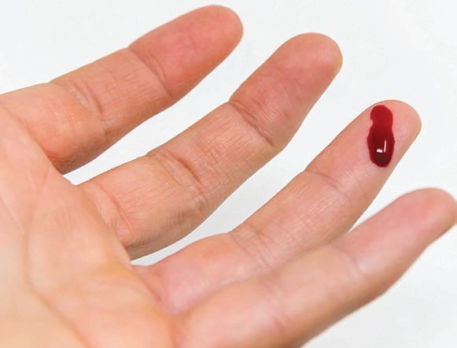
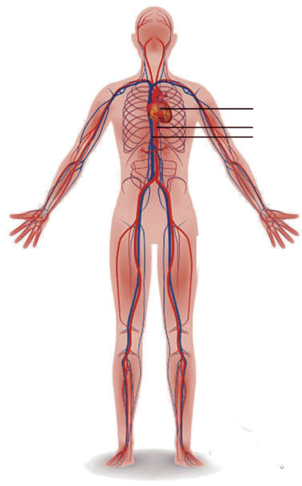
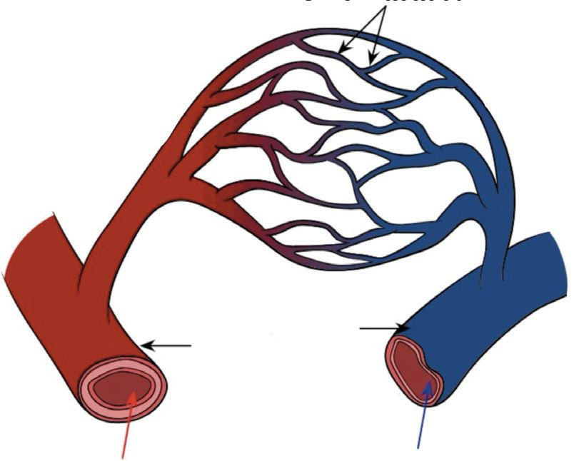
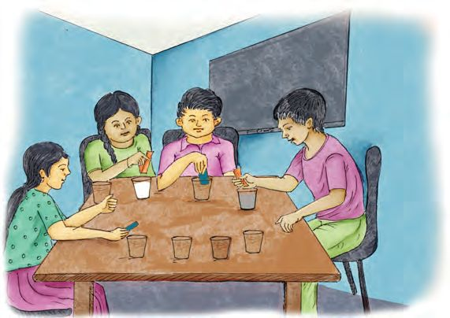
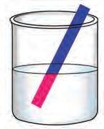
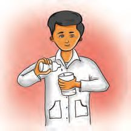
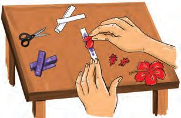
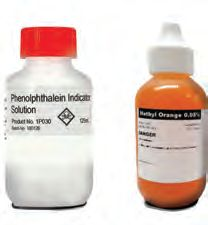
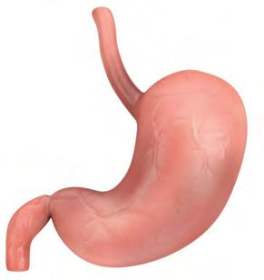
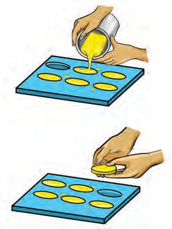

Observe the picture.
A child who had not taken any food for two days and had become weak due
to severe fever was admitted in the hospital. The doctor prescribed glucose
drip along with the medicine.
Why are some drugs and glucose injected directly into the blood? Does the
glucose injected into the blood reach all parts of the body? Discuss.
The nutrients that are released when the food is completely digested in the
small intestine and the oxygen that reaches the lungs as a result of breathing
should reach the cells. How do they reach the cells?
127
Page 24

Figure fig_ch02_p024_01 (Page 24)

Figure fig_ch02_p024_02 (Page 24)
Basic Science
Write down your assumption.
Circulatory system
Nutrients that are absorbed by the villi in the small intestine and oxygen
obtained as a result of breathing reach in cells. All these functions are
performed by blood. The system which consists of blood, blood vessels and
heart is the circulatory system.
?
Blood
?
Observe the picture and write down
the parts of human circulatory system.
u
u
An important function of the
circulatory system is to transport
nutrients and oxygen-rich blood from
the heart to all parts of the body, and
also to carry carbon dioxide-rich blood
from different parts of the body to the
heart.
Human blood
Do you know the colour of our blood?
Why is blood red in colour?
The red colour of the blood is due to the presence
of a pigment called haemoglobin. Iron and protein
are the main components of haemoglobin. Haven’t
you understood the necessity of consuming iron
rich food?
Observe the picture of some food items containing iron. Find out other food
items containing iron and record it in the Science Diary.
• No definite shape
• Has nucleus
• Destroys pathogens
Analyse the illustration and write the answers of the following questions in
the Science Diary.
129
Page 26
Figure fig_ch02_p026_01 (Page 26)

Figure fig_ch02_p026_02 (Page 26)
Basic Science
u
Which is the liquid part of blood?
u
Which are the blood cells?
u
What is the function of platelets?
u
u
Heart
Artery
Vein
In which blood cell is haemoglobin
found?
Differentiate RBC and WBC
Blood Circulation
Blood flows through blood vessels to all
parts of the body.
Observe the pictures and find out how
many types of blood vessels are there in
our body.
u
Capillaries
u
u
Capillaries
Vein
Artery
Starts from the heart
Reaches the heart
Arteries, Veins and Capillaries
u
u
u
Arteries are the blood vessels that carry oxygen-rich blood from the
heart to different parts of the body.
Veins are the blood vessels that carry carbon dioxide - rich blood from
different parts of the body to the heart.
Capillaries are the thin blood vessels that connect arteries and veins.
The heart is the centre of the circulatory system. It pumps
blood to all parts of the body. Feel your own heart beat and
locate your heart.
The heart is located in the thoracic cavity between the
lungs. It is protected by the ribs.
What are the characteristics of human heart?
Observe the pictures of human heart.
u The heart is about the size of a clenched fist.
u The heart is covered by a double layered
membrane called pericardium.
u The human heart has four chambers.
Do all organisms have heart?
Do the hearts of other organism also have four
chambers?
For further reading
Organism
Heartbeat
Doesn’t the doctor check your heartbeat and pulse when you go to a hospital?
What is heartbeat? What is pulse?
Heartbeat and Pulse
Heartbeat is defined as the rhythmic contraction and relaxation of heart
muscles. The heart of a healthy adult beats 72 times per minute. This is
heart rate. Pulse is the wave produced in the artery as a result of heartbeat.
The heart rate and pulse rate are equal.
Check your own heartbeat and write down how many times it beats per
minute.
Observe the picture. Which are the body parts that are examined to feel pulse?
u
The wrist
u
Both sides of the forehead
u
u
Observe the picture of a doctor examining a
child.
What instrument does the doctor use?
What is its use? Write it in the Science Diary.
For further reading
Rene Laennec
Stethoscope is an
instrument used to check
the heartbeat. It was
invented by Rene
Laennec.
Stethoscope
132
Page 29

Figure fig_ch02_p029_01 (Page 29)
Class - VII
Let’s Make the Model of a Stethoscope
Materials required: Plastic tube, Y- tube, funnel, polythene tube, balloon, two
ear phone buds, metal hair bow, insulation tape.
Observe the picture and make the model of a stethoscope.
Ear phone
bud
Polythene tube
Insulation
tape
Y- tube
Name of the Child
Metal hair bow
Balloon
Funnel
Heart Rate
Can you feel your own
heartbeat using the
stethoscope you have
made?
Find out the heart rate
and pulse rate of your
friends.
Pulse Rate
Compare the heart rate and pulse rate. What are your findings? Record them
in your Science Diary.
Won’t the heart rate and pulse rate be the same?
Will there be any change in the heart and pulse rates during strenuous activities?
Find out the change in the heart and pulse rates of your friends who have
been running around for some time. Write them down in your Science Diary.
Name of Child
Heart Rate
133
Pulse Rate
Page 30

Figure fig_ch02_p030_01 (Page 30)
Basic Science
Does heart rate and pulse rate vary with age and medical condition?
Check the heart and pulse rates of the elders at your home and record them
in the Science Diary and present in the class.
Cardiac Wellness
Listen to the monologue of the heart.
Regular
intake of
fatty foods
affects my
functioning.
Smoking and
drinking liquor
will make me
sick fast.
Life style
diseases
wear me
down
Lack of
regular exercise
will impair my
health.
What are the things we should take care of to maintain a healthy heart?
After analyzing the illustrations, record your findings in the Science Diary.
We can protect the health of the heart through good food habits, regular
exercise and better life styles.
In Case of Injury
You have understood that the heart, blood and blood vessels are parts of the
circulatory system.
What will happen if blood vessels are cut?
While playing, your friend’s hand gets injured and it is bleeding. What will
you do?
What first aid can be given to a person who is injured?
u Clean the wound with fresh water.
u Press the wound with your hand.
u If the wound is on the hand, hold it up.
u If bleeding doesn’t stop, wrap the wound with a clean cloth or bandage.
u
Get medical help quickly.
134
Page 31

Figure fig_ch02_p031_01 (Page 31)

Figure fig_ch02_p031_02 (Page 31)

Figure fig_ch02_p031_03 (Page 31)
Class - VII
For further reading
Transplant the Heart
Heart transplantation is performed on people with severe heart disease.
Usually, the heart of a brain dead person is transplanted onto the patient.
The first successful heart transplant was done by Dr. Christiaan Barnard
in 1967.
Blood Donation - A Noble Act
A healthy person has about 5.5 litres of blood in his body. What is to be done
if there is a decrease in the volume of blood due to accidents or illness?
Observe the picture.
Blood Donation
A Noble Donation
Blood donation is the voluntary donation of blood by a person to another or
for further use through its scientific preservation. You can also be a part of this
social service when you turn 18. Prepare slogans related to blood donation
and display in the class.
Excretory System
So far, we have discussed life processes such as digestion, circulation and
respiration.
Which is the gas produced as a result of respiration? Which organ eliminates
it? What are the other waste materials produced in our body?
What are the mechanisms available to eliminate these waste materials?
Excretion
Excretion is the process of elimination of urea, excess water, salts etc.
that are produced in the body as a result of life processes.
135
Page 32
Figure fig_ch02_p032_01 (Page 32)
Basic Science
Kidney
Kidneys are the most important excretory organs in our body. They act as
filters in the human body.
Observe the picture and identify the shape of the kidney.
Discuss the given questions with the help of the following notes and picture.
Record your findings in the Science Diary.
Kidney and Filtration
Renal Artery
Kidneys are bean-shaped and are located in
the abdominal cavity on either side of the
vertebral column. The renal artery carries
blood to the kidneys. This blood contains
urea, glucose, salts, oxygen and other
components. But the blood returning
through the renal vein after filtration
contains comparatively less amount of urea,
glucose,
salts,
oxygen,
and
other
components. The waste products in the
blood thus filtered by the kidneys are
eliminated through urine. Kidneys play an
important role in maintaining the proper
concentration of water and salts in the body.
The average daily output of urine from a
healthy person is 1.5 litres.
Renal
Vein
Kidney
Ureter
Urinary
Bladder
Discussion points
u
Which blood vessel carries blood to the kidneys?
u
Which blood vessel carries blood back from the kidneys?
u
How does the blood in the renal artery differ from that in the renal vein?
u
Which tube carries urine from the kidneys?
u
In which part of the excretory system is urine collected?
Listen to the conversation between a child and a doctor.
Doctor, I feel pain and a
burning sensation while
urinating. There is pain in
lower abdomen also.
Don't you drink enough
water and urinate
regularly?
Proper functioning of the kidneys
requires adequate intake of water. If
you don’t urinate for a long time,
pathogens will get multiplied in the
urethra and bladder, leading to
infection.
To avoid frequent
urination, I drink very little
water while at school and
urinate only after reaching
home.
What are the health problems that will occur if you don’t drink enough water
and urinate at regular intervals? Interview a doctor and write them in the
Science Diary.
Examine the illustration below.
Please give up
smoking and
drinking liquor
Please
exercise daily
Please
avoid overuse of
artificial drinks
Pro
tect me
Please
reduce excess
use of salt
Please
reduce the use
of unnecessary
medicines
Please
drink at least 12
glasses of water
daily
137
Page 34
Basic Science
What are the measures we should take care of to protect the health of our
kidney? Discuss in the class and record them in the Science Diary.
What are the means to save someone suffering from kidney failure.
u
Dialysis
u
Kidney Transplantation
Kidney transplantation is the process of transplanting one kidney from a
healthy donor to a person whose both kidneys are impaired. Kidney
transplantation will be possible only if certain vital factors, including the
blood group of the donor and the recipient, are compatible. Any healthy
person above 18 years can donate a kidney.
Other Excretory Organs
Sweat is produced in our body during summer and rainy seasons.
How is it eliminated from the body?
What materials are expelled from the body through sweat?
u
Water
u
Analyse the given note and find out the functions of skin. Write them in your
Science Diary.
Sweat
Sweat is produced by sweat glands in the skin. Excess water and salt in
the body are eliminated through sweat. The heat to evaporate sweat is
taken from our body. Sweating thus helps in our temperature regulation.
Protecting the body by covering it and sensing touch are also the
functions of skin.
Sweat comes out from the sweat glands through the minute pores in the skin.
If the sweat accumulates in the skin, it will cause diseases. Therefore, skin
must be thoroughly cleansed while bathing.
Haven't you understood the importance of personal hygiene in healthcare?
Apart from kidney and skin, lungs and liver also play a role in the excretory
process.
Read the notes on lungs and liver. Discuss the points given below with your
friends and record them in the Science Diary.
Lungs
Lungs eliminate the carbon dioxide
produced in the cells.
Liver
Liver is the largest gland in the human
body. It destroys the harmful chemical
substances reaching through the blood.
Bile that is essential to digest fats is
also synthesized in the liver. When
nutrients break down ammonia which
is harmful to the body, is produced.
Liver converts this into urea, which is
comparatively less toxic.
Discussion Points
u
Which organ eliminates carbon dioxide produced in the cells?
u
Name the largest gland in the human body.
u
Which chemical substance is produced by the liver?
u
What are the functions of the liver?
Plants are also living things. Excretion takes place in them too. We will study
about different methods of plant excretion in higher classes.
Nervous System
There are different organs in our body. Does only one organ function when
we work? Imagine that a pen fell down from your hand. Which are the organs
that function when we pick it up? Write them down.
139
Page 36
Figure fig_ch02_p036_01 (Page 36)

Figure fig_ch02_p036_02 (Page 36)
Basic Science
All bodily activities are possible only through the coordination of various
organs in the body. How is the coordination of various activities possible in
our body? Don't you close your eyes instinctively if an insect flies towards
your eye? How about lighting a torch into your eyes? How will we respond to
such situations?
Read the note given below and find answers to the questions. Write them in
the Science Diary and present in the class.
Nervous System
Nervous system helps us to respond
according to the circumstances. It is composed
of the brain, spinal cord and nerves.
Brain is the most important organ in the
body. It is protected inside the skull. Some
of the major functions of the brain are: to
control movements of various muscles of the
body, coordinate all activities of the body and
give instructions to the cells. The brain is the centre of vision,
hearing, memory, intelligence, imagination and emotions.
Even the most modern computers are less efficient than a human
brain. A computer has the ability to work only according to the
programmed software. On the other hand, the brain can react to its
surroundings, learn and imagine new things.
Brain is active not only when you are awake but
also when you are asleep. All the body functions
are controlled and coordinated by the nervous
system. The use of alcohol and drugs, adversely
affects the functions of the nervous system.
u
What are the main functions of the brain?
u
Name the bony covering that protects the brain?
u
What are the main parts of the nervous system?
140
Page 37
Class - VII
Adolescence and Health
You are growing day by day and are now passing through adolescence.
Adolescence period is from the age of 10 to 19 years. Biologically, it is a period
with many peculiarities. As a natural biological process, many physical
changes occur during this period. Brain development, sudden increase in
height and weight, increased efficiency of glands etc. are the characteristics of
this period.
What are the physical changes that take place during this period? Discuss.
Physical Changes during Adolescence
Boys
Girls
Rapid growth
Rapid growth
Fast growth of reproductive organs
Fast growth of breast and reproductive
organs
Hair develops around reproductive Hair develops around reproductive
organs, underarms, chest and face organs and underarms
Voice gets deeper
Voice becomes sweeter
Start spermatogenesis
Start ovulation and menstrual cycle
Haven’t you started experiencing such physical changes of adolescence?
Menstruation
Many kinds of preparations for reproduction take place in the uterus of a
woman every month. Numerous blood vessels and tissues develop in the
inner layer of uterus. If pregnancy does not happen, these preparations
become futile. Then the newly formed blood vessels and tissues collapse.
Blood vessels and tissues shedded off from the uterine wall gets expelled from
the body along with blood. This process is called menstruation. The menstrual
bleeding may last for seven days. Some people may experience severe
abdominal pain, vomiting, back pain and leg cramps before and during
menstruation. Some people may also develop excessive anger and anxiety
during this period.
141
Page 38
Figure fig_ch02_p038_01 (Page 38)
Basic Science
Menstrual cycle is a normal physiological process that occurs in every 28 days.
There may be slight variations in this. Consult a doctor if your menstrual cycle
is irregular.
Menstrual Hygiene
What methods do girls adopt to manage menstrual blood?
Discuss the advantages and disadvantages of using sanitary napkins during
menstrual periods.
Advantages
Disadvantages
Difficulty in disposing
Menstrual Cup
Don’t you know that menstrual cups are now available
which are more convenient to use during menstruation.
Discuss with health workers and learn more about the
use of menstrual cups and adolescent hygiene.
What are the benefits of using a menstrual cup? Discuss
and record them in the Science Diary.
Wash your hands with a soap or mild disinfectant before and after using
menstrual cup, sanitary napkins or cloth. Care should be taken to change
sanitary napkins or cloth after every four to five hours as part of cleanliness.
Adolescent Nutrition
What kind of food should we take during adolescence? Discuss based on the
indicators given below.
u
Body growth during adolescence is rapid.
u
A girl loses about 0.6 litre blood during menstruation.
Considering the blood loss and rapid body growth, how should adolescents
adjust their food habits? Discuss and write in the Science Diary.
142
Page 39

Figure fig_ch02_p039_01 (Page 39)
Class - VII
Haven’t you understood that our body is a storehouse of many wonders?
Visit medical exhibitions to view and understand more about the internal
organs we have learned about.
Sexual Exploitation
Boys and girls, including small children, are subjected to various kinds of
physical, mental and sexual abuse in the society. They often become victims
of abuse in their own homes, relatives’ houses, vehicles, schools and other
public places.
You need to be careful about the following types of people while interacting
with relatives, classmates, friends and strangers.
u
Those who try to touch your body parts without permission
u
People who talk and look with a sexual intent
u
Those who encourage you to view pornographic images and videos
u
Those who show fake love and give gifts
If you face any difficulty in the above-mentioned ways, you should speak
openly without fear to your parents, classmates, teachers or school counselor.
You should practice saying ‘NO’
firmly when you recognize bad touch
by someone on your body parts.
If you don’t get enough support from
your near and dear ones even after
opening up about the harassment
you or your classmates had faced,
you can contact the Child Helpline
number.
It is the child's right to get protection
from all kinds of exploitations.
143
Page 40
Basic Science
Let’s Assess
1. Which among the following organs does not perform the function of
excretion?
a. Kidney
b. Liver
c. Heart
d. Lungs
2. Which of the following statements is correct?
a. Pulse rate increases while running
b. All individuals have the same pulse rate.
c. Pulse rate can be checked at the wrist only.
d. Pulse rate and heart rate are different
3. What should be done to prevent urinary infections?
4. What are the physical discomforts that may occur during mensturation?
5. The most important organ in the human body is the brain. Substantiate.
Extended Activities
1. Prepare and display a chart showing measures to be taken to maintain a
healthy heart.
2. Prepare posters as part of anti-drug awareness campaign, and display
them in your school.
3. Prepare an interview schedule to conduct an interview with the doctor on
the topic ‘Adolescent Health and Eating Habits’.